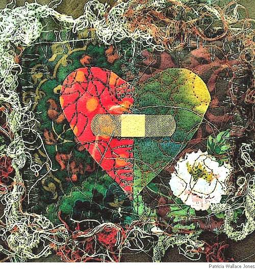

Chris Mooney-Singh
Me
by Khawja Mir Dard (1721-1725)
(translated from the Urdu by Chris Mooney-Singh and Savinder Kaur)
The shuffling feet smash down, the world-dust flies around me;
dear Years gone galloping, where did you dump, impound me?
Hey rose, pack up your petals and I will flee my nest
so the florist can’t snip you and this gardener won’t hound me.
She resides without a word behind my doors, my pores,
while my feral tongue spits fire: ah — jabber on, expound me.
A cold hand's caught this heart — a maw that crushes stone.
Such pure callousness and its burial fog have crowned me.
I remember how the orchard was a hideout for reflection.
And now? It's Sorrow Grove. Hey, Sad Corner, why compound me?
I've jumped up glad, astounded—hearing, at times—a sound,
but face to face, your love-dead eyes recant, confound me.
This is the desert’s road: says Dard — it’s dust to dust.
Breath by breath — I merge — grain by grain around me.
Original:
Ghazal: Mujhe
by Khawja Mir Dard
Raundhe hai naqsh-e-pa ki tara khalq yaan mujhe,
Ai umr-e-rafta chhor gayi tu kahan mujhe?
Ai gul tu rakht baandh uthaaun main aashian,
Gulchin tujhe na dekh sake, baagh baan mujhe.
Rahti hai koi bin kiye mere taeen tamaam,
Jun shama chhorne ki nahin yeh zaban mujhe.
Pathhar tale ka haath hai yeh gaflat ke haath dil,
Sang-e-giran hua hai yeh khwaab-e-giran mujhe.
Kuchh aur kunj-e-gham ke siwa suhjta nahin,
Aata hai yaad jab ke woh kunj-e-dihaan mujhe.
Jata hun khush dimaagh jo sun kar use kabho,
Badle hai wohin nazren woh dekha jahaan mujhe.
Jata hun baske dam-b-dam ab khaak mein mila,
Hai khizr-e-rah Dard yeh reg-e-rawaan mujhe.
Dard, son of a Sufi mystic, is one of the three major poets of the Delhi School — the other two being Mir Taqi Mir and Sauda — who could be called the pillars of the classical Urdu Ghazal.
Two Ghazals After Her Passing
(From Bonehead Ghazals)

1
How to comprehend? Her raspy breathing stopped.
A fever penned her frail end, then stopped.
Her small, steel wristwatch is still ticking on the table.
The clock does not pretend her heart has stopped.
Her Visa bill is back, it snooped here late last month.
This cruel computer-trend – it must be stopped.
The house-keys on her chain, rest here inside the drawer.
She tied up each loose end, coughed dry, then stopped.
Her embroidered button-box, a needle and red silk
can’t mend her threadbare gasp that broke, then stopped.
The shelf, my sweeping hand, her photo’s shattered frame;
the face of my best friend has crashed and stopped.
If the body is fuse wire, does electricity live on,
did she ascend before the power stopped?
This ghazal is a letter, a prayer torn from the book.
Send it, Bonehead, before your hand is stopped.
2
Grief leads to faith and tries to start again -
make plunging in your saving art again.
The frangipani flowers had to fall —
how mad to think we’d never part again.
Prize an empty house, despite the pain,
let numbness be a wound to smart again.
Beware the gang of sorrows in the dark —
you need not pull her rose apart again.
Bite the lemon, wake the loser mouth,
let days and nights taste sharp and tart again.
Her curve’s no longer climbing up your chart —
run free and find your athlete heart again.
Why hunt, Bonehead, among the phantom trees?
Her heart stopped. Yours must start again.
Chris Mooney-Singh (born 1956) is the founder of Poetry Slam™ in Singapore. Of Australian Irish descent related to Ned Kelly, Australia’s best known bushranger, he adopted Sikhism in 1989, Mooney-Singh has also published two poetry joint collections, two chapbooks, co-edited a poetry anthology, The Penguin Book of Christmas Poems, and has three spoken word CDs, the latest being Living in the Land of the Durian Eaters. Mooney-Singh also has poems published online at Times Online, Mindfire, Cezannes Carrot, Stylus, Umbrella Journal, The Loch Raven Review, Simply Haiku, Ghazalpage and Quarterly Review of Literature, Singapore (QRLS). His next collection, The Laughing Buddha Cab Company, will be published in December 2007. Mooney-Singh was a guest at the Austin International Poetry Festival, 2003, the Hong Kong Writers Festival, 2004 and the Kuala Lumpur Lit Festival (2007).
As Programme Director of Word Forward, a literary arts company teaching poetry and performance in schools he has performed his poetry and taught the art of writing and performing.
|

{kind=link}